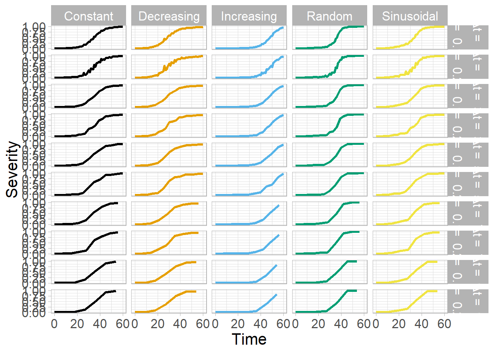
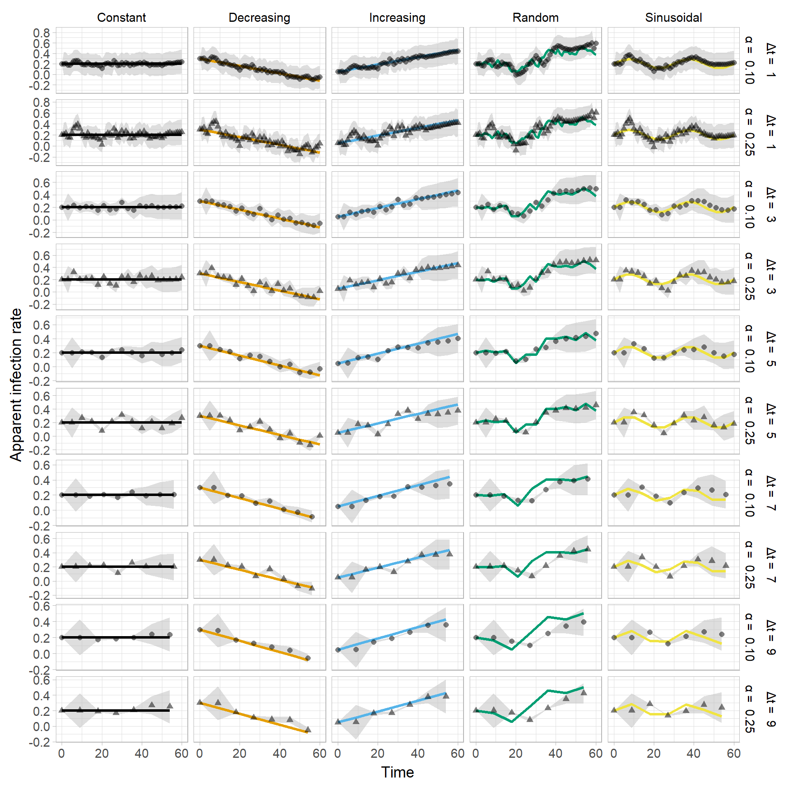
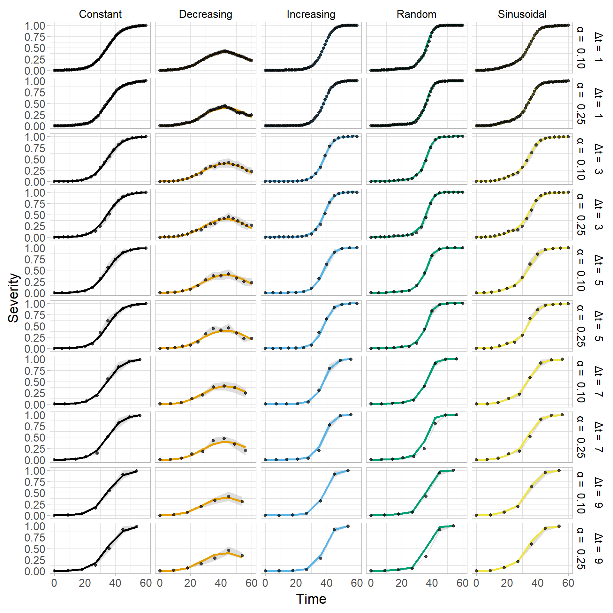
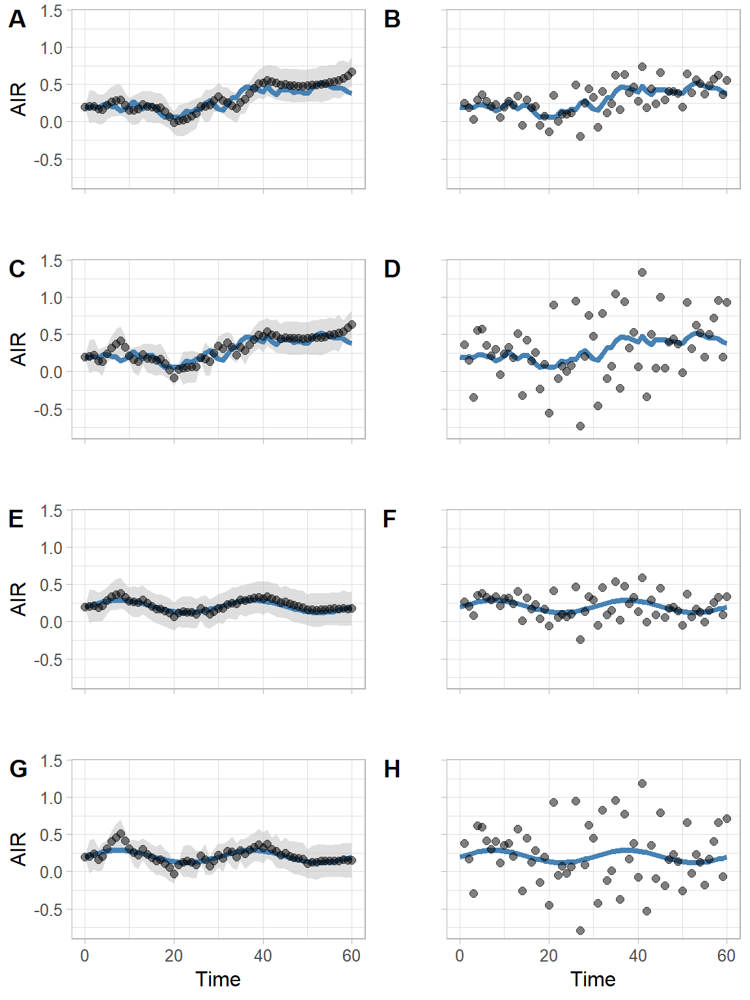
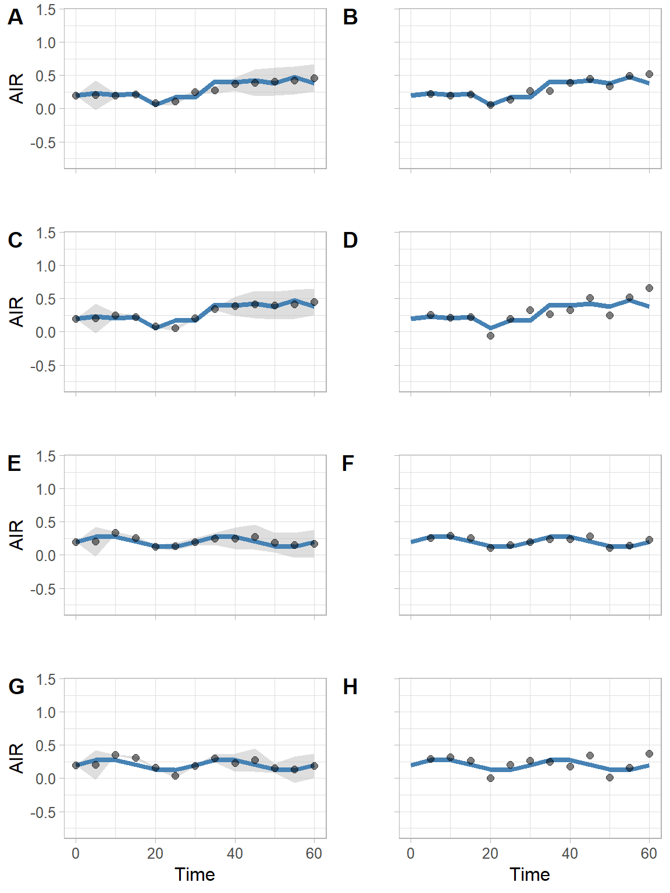

Analysis
Packages
Load the packages needed to the analysis
library(tidyverse)
library(deSolve)
library(ggthemes)
library(cowplot)
library(viridis)ggplot2 global theme
theme_set(theme_light())functions
The fuction for simulation of the measures and particle filter are called here.
source("logistic.R")
source("particle_filter2.R")Estimation for logistic model
Here we set the initial values for simulation of each type of infection rate behavior.
logi_setup = matrix(c("Constant", 0.2,
"Increasing", 0.05,
"Decreasing", 0.3,
"Sinusoidal", 0.2,
"Random", 0.2),
nrow=5,
ncol=,
byrow = TRUE) Run the particle filter for each type of infection rate, for each time interval and noise
noise = c(0.1, 0.25)
logistic_all3 = data.frame()
for(j in 1:2){
logistic_all2 = data.frame()
for(k in seq(1,10, by = 2)){
logistic_all = data.frame()
for( i in 1:5){
set.seed(5)
data = logistic(N= 60, dt=0.5, y0=0.001, r=as.numeric(logi_setup[i,2]), sd = noise[j], inf = i)
data = data %>%
filter(time %in% c(seq(0,60, by = k)))
data_logi = data.frame(infection_type = as.factor(logi_setup[i,1]),
SIR_filter(model = 1,
guess_r = as.numeric(logi_setup[i,2]),
Nparti=1000,
measures = data$Randon_intensity,
time = data$time,
sd_meas = 0.25,
sd_par = 0.15,
sd_model = 0.005),
y = data$Intensity,
inf_rate = data$inf_rate)
logistic_all = logistic_all %>%
bind_rows(data_logi)
}
logistic_all = logistic_all %>%
mutate(time_interval = k)
logistic_all2 = logistic_all2 %>%
bind_rows(logistic_all)
}
logistic_all2 = logistic_all2 %>%
mutate(noise = noise[j])
logistic_all3 = logistic_all3 %>%
bind_rows(logistic_all2)
}Changing the names of the noise and time interval
logistic_all3 = logistic_all3 %>%
mutate(noise2 = noise) %>%
mutate(noise = case_when(noise == 0.10 ~ "\u03b1 = 0.10",
noise == 0.25 ~ "\u03b1 = 0.25")) %>%
mutate(time_interval2 = time_interval) %>%
mutate(time_interval = case_when(time_interval == 1 ~ "\u0394t = 1",
time_interval == 3 ~ "\u0394t = 3",
time_interval == 5 ~ "\u0394t = 5",
time_interval == 7 ~ "\u0394t = 7",
time_interval == 9 ~ "\u0394t = 9"))Data
head (logistic_all3)Visualization
Vizualization of the Noised Disease progress curves
logistic_all3 %>%
ggplot()+
geom_line(aes(time,realSmeas, color = infection_type),
size = 1.2)+
facet_grid(time_interval+noise~infection_type)+
scale_fill_manual(values = "gray")+
scale_color_colorblind()+
labs(x = "Time",
y = "Severity")+
theme(legend.position = "none",text = element_text(size = 16),
strip.text = element_text(color = "black"),
strip.background = element_rect(fill="white"))+
scale_y_continuous(breaks = seq(0,1, 0.25))
ggsave("figs/logistic_noised.png", dpi=300, height = 12, width = 8)Vizualization of the parameter estimation
logistic_all3 %>%
ggplot()+
geom_ribbon(aes(time, ymin = (ubdsiro), ymax = (lbdsiro), fill = "Ic 99%"), alpha = 0.5, stat = "identity") +
geom_line(aes(time,inf_rate, color = infection_type),
size = 1.2)+
geom_point(aes(time,sinti),
size = 2, alpha = 1)+
facet_grid(time_interval+noise~infection_type, scales = "free_y")+
scale_fill_manual(values = "gray")+
scale_color_colorblind()+
labs(x = "Time",
y = "Apparent infection rate")+
theme(legend.position = "none",text = element_text(size = 14),
strip.text = element_text(color = "black"),
strip.background = element_rect(fill="white"))+
scale_y_continuous(breaks = seq(-2,2, 0.2))
ggsave("figs/logistic_air.png", dpi=300, height = 12, width = 8)Visualization of the severity estimation
logistic_all3 %>%
ggplot()+
geom_ribbon(aes(time, ymin = (ubdsir), ymax = (lbdsir), fill = "Ic 99%"), alpha = 0.5, stat = "identity") +
geom_line(aes(time,y, color = infection_type),
size = 1.2)+
geom_point(aes(time,xestsir),
size = 1.5, alpha = 0.7)+
facet_grid(time_interval+noise~infection_type)+
scale_fill_manual(values = "gray")+
scale_color_colorblind()+
labs(x = "Time",
y = "Severity")+
theme(legend.position = "none",text = element_text(size = 16),
strip.text = element_text(color = "black"),
strip.background = element_rect(fill="white"))+
scale_y_continuous(breaks = seq(0,1, 0.25))
ggsave("figs/logistic_curve.png", dpi=300, height = 12, width = 8)Acuracy
a = logistic_all3 %>%
group_by(infection_type,time_interval2, noise) %>%
mutate(rmsi = (inf_rate - sinti)^2,
maei = abs(inf_rate - sinti)) %>%
summarise(RMS = sqrt((1/(length(inf_rate)))*sum(rmsi, na.rm = T))) %>%
mutate(model = "Logistic")
acuracy_logi = a
head(acuracy_logi)Calculate the Apparent infection rate
Using the following equation we calculated the time virying r
\[ r_{i+1} = \frac {[ln(\frac {y_{i+1}}{1-y_{i+1}}) -ln(\frac {y_{i}}{1-y_{i}}) ]}{t_{i+1} - t_{i}} \]
calc_r_log = logistic_all3 %>%
group_by(infection_type,time_interval,noise) %>%
mutate(r_calc = (log(realSmeas/(1-realSmeas)) - log((lag(realSmeas,1)/(1-(lag(realSmeas,1))))))/(time - lag(time,1))) %>%
mutate(model = "Logistic")
calculated_r = calc_r_log
head(calculated_r %>%
ungroup() %>%
select(infection_type, time,noise,time_interval2, r_calc))Visualization
calculated_r %>%
ggplot()+
geom_line(aes(time,inf_rate, color = infection_type),
size = 1.2)+
geom_point(aes(time,r_calc),
size = 2,
alpha = 1)+
facet_grid(time_interval+noise~infection_type, scales = "free_y")+
scale_fill_viridis()+
scale_color_colorblind()+
labs(x = "Time",
y = "Apparent infection rate")+
guides(color= guide_legend("none"))+
theme(text = element_text(size = 14), legend.position = "none",
strip.text = element_text(color = "black"),
strip.background = element_rect(fill="white"))## Warning: Removed 50 rows containing missing values (geom_point).
ggsave("figs/r_calc_logi.png", dpi=300, height = 12, width = 8)## Warning: Removed 50 rows containing missing values (geom_point).Acuracy
acuracy_calc = calculated_r%>%
filter(r_calc != is.na(r_calc)) %>%
group_by(infection_type, time_interval2,noise) %>%
mutate(rmsi = (inf_rate - r_calc)^2,
maei = abs(inf_rate - r_calc)) %>%
summarise(RMS = sqrt((1/(length(inf_rate)))*sum(rmsi, na.rm = T)))
head(acuracy_calc)Visualization
RMS
plotting the RMS
ggplot()+
geom_line(data =acuracy_calc, aes(time_interval2, RMS, color = "Calculated", linetype = as.factor(noise)),
size = 1)+
geom_point(data =acuracy_calc, aes(time_interval2, RMS, color = "Calculated"),
size = 2.5)+
geom_line(data =acuracy_logi, aes(time_interval2, RMS, color = "Estimated", linetype = as.factor(noise)),
size = 1)+
geom_point(data =acuracy_logi, aes(time_interval2, RMS, color = "Estimated",),
size = 2.5)+
scale_color_colorblind("r")+
scale_x_continuous(breaks = seq(1,9,by=2))+
scale_linetype_manual(values = c("solid","dashed"))+
facet_grid(~infection_type)+
guides(linetype=guide_legend(keywidth = 2, keyheight = 1),
color=guide_legend(keywidth = 2, keyheight = 1))+
labs(x = "Time interval", y = "RMSE", linetype = "Noise")+
theme(legend.position = "bottom",
text = element_text(size = 14),
strip.text = element_text(color = "black"),
strip.background = element_rect(fill="white"))
ggsave("figs/RMS.png", dpi=300, height = 5, width = 11)Disease progress curves
plot_grid(
plot_grid(logistic_all3 %>%
filter(time_interval2==3 ) %>%
ggplot()+
geom_point(aes(time,y, color = infection_type),size = 2.5, alpha = 1)+
geom_line(aes(time,y, color = infection_type),size = 1, alpha = .6)+
scale_fill_manual(values = "gray")+
scale_color_colorblind()+
labs(x = "Time",
y = "Disease intensity", color = "AIR")+
theme(text = element_text(size = 16),legend.position = "none", axis.title.x = element_text(color ="white"))+
scale_y_continuous(breaks = seq(0,1, 0.25)),
logistic_all3 %>%
filter(time_interval2==3 & noise2 == 0.1 ) %>%
ggplot()+
geom_point(aes(time,realSmeas, color = infection_type),size = 2.5, alpha = 1)+
geom_line(aes(time,realSmeas, color = infection_type),size = 1, alpha = .6)+
scale_fill_manual(values = "gray")+
scale_color_colorblind()+
labs(x = "Time",
y = "Disease intensity", color = "AIR")+
theme(text = element_text(size = 16),legend.position = "none", axis.title.x = element_text(color ="white"))+
scale_y_continuous(breaks = seq(0,1, 0.25)),
logistic_all3 %>%
filter(time_interval2==3 & noise2 == 0.25) %>%
ggplot()+
geom_point(aes(time,realSmeas, color = infection_type),size = 2.5, alpha = 1)+
geom_line(aes(time,realSmeas, color = infection_type),size = 1, alpha = .6)+
scale_fill_manual(values = "gray")+
scale_color_colorblind()+
labs(x = "Time",
y = "Disease intensity", color = "")+
theme(text = element_text(size = 16),legend.position = "none")+
scale_y_continuous(breaks = seq(0,1, 0.25)),
nrow = 3, rel_heights = c(0.83,0.83,1), labels = "AUTO")
,
a = get_legend(logistic_all3 %>%
filter(time_interval2==3 & noise2 == 0.25) %>%
ggplot()+
geom_point(aes(time,realSmeas, color = infection_type),size = 2.5, alpha = 1)+
geom_line(aes(time,realSmeas, color = infection_type),size = 1, alpha = .6)+
scale_fill_manual(values = "gray")+
scale_color_colorblind()+
labs(x = "Time",
y = "Severity", color = "")+
theme(text = element_text(size = 16),legend.position = "right")+
scale_y_continuous(breaks = seq(0,1, 0.25))), rel_widths = c(1,0.4))
ggsave("figs/DPCs.png", dpi=300, height = 9, width =7)Estimates for increasing parameter
# plot_grid(
logistic_all3 %>%
mutate(Approach = "Estimated") %>%
bind_rows(calculated_r%>%
mutate(Approach = "Calculated",sinti = r_calc)) %>%
filter(infection_type == "Increasing") %>%
filter(time_interval2 %in% c(1,5)) %>%
ggplot()+
geom_ribbon(aes(time, ymin = ubdsiro, ymax = lbdsiro,alpha = Approach, fill = "99% CI"), stat = "identity")+
geom_line(aes(time, inf_rate, color = time_interval),size = 1.5)+
guides(alpha = guide_legend("none"))+
geom_point(aes(time, sinti))+
# facet_wrap(noise+time_interval~Approach)+
facet_grid(noise+time_interval~Approach)+
scale_alpha_discrete(range = c(0, 0.5))+
scale_color_colorblind()+
scale_fill_manual(values = "gray")+
labs(x = "Time", y = "Apparent infection rate", fill = "", color= "")+
theme(legend.position = "bottom", text = element_text(size = 16),
strip.text = element_text(color = "black"),
strip.background = element_rect(fill="white"))## Warning: Using alpha for a discrete variable is not advised.## Warning: Removed 4 rows containing missing values (geom_point).
ggsave("figs/Fig5.png", dpi=300, height = 8, width = 6)## Warning: Removed 4 rows containing missing values (geom_point).JSBBbmFseXNpcw0KDQojIFBhY2thZ2VzDQoNCkxvYWQgdGhlIHBhY2thZ2VzIG5lZWRlZCB0byB0aGUgYW5hbHlzaXMNCg0KYGBge3IgbWVzc2FnZT1GQUxTRSwgd2FybmluZz1GQUxTRX0NCmxpYnJhcnkodGlkeXZlcnNlKQ0KbGlicmFyeShkZVNvbHZlKQ0KbGlicmFyeShnZ3RoZW1lcykNCmxpYnJhcnkoY293cGxvdCkNCmxpYnJhcnkodmlyaWRpcykNCmBgYA0KDQojIGBnZ3Bsb3QyYCBnbG9iYWwgdGhlbWUNCg0KYGBge3J9DQp0aGVtZV9zZXQodGhlbWVfbGlnaHQoKSkNCmBgYA0KDQojIGZ1bmN0aW9ucw0KDQpUaGUgZnVjdGlvbiBmb3Igc2ltdWxhdGlvbiBvZiB0aGUgbWVhc3VyZXMgYW5kIHBhcnRpY2xlIGZpbHRlciBhcmUgY2FsbGVkIGhlcmUuIA0KYGBge3J9DQpzb3VyY2UoImxvZ2lzdGljLlIiKQ0Kc291cmNlKCJwYXJ0aWNsZV9maWx0ZXIyLlIiKQ0KYGBgDQoNCiMgRXN0aW1hdGlvbiBmb3IgbG9naXN0aWMgbW9kZWwNCg0KSGVyZSB3ZSBzZXQgdGhlIGluaXRpYWwgdmFsdWVzIGZvciBzaW11bGF0aW9uIG9mIGVhY2ggdHlwZSBvZiBpbmZlY3Rpb24gcmF0ZSBiZWhhdmlvci4NCg0KYGBge3J9DQpsb2dpX3NldHVwID0gbWF0cml4KGMoIkNvbnN0YW50IiwgMC4yLA0KICAiSW5jcmVhc2luZyIsIDAuMDUsDQogICJEZWNyZWFzaW5nIiwgMC4zLA0KICAiU2ludXNvaWRhbCIsIDAuMiwNCiAgIlJhbmRvbSIsIDAuMiksDQogIG5yb3c9NSwNCiAgbmNvbD0sDQogIGJ5cm93ID0gVFJVRSkgDQoNCmBgYA0KDQpSdW4gdGhlIHBhcnRpY2xlIGZpbHRlciBmb3IgZWFjaCB0eXBlIG9mIGluZmVjdGlvbiByYXRlLCBmb3IgZWFjaCB0aW1lIGludGVydmFsIGFuZCBub2lzZQ0KDQpgYGB7ciB3YXJuaW5nPUZBTFNFfQ0Kbm9pc2UgPSBjKDAuMSwgMC4yNSkNCg0KbG9naXN0aWNfYWxsMyA9IGRhdGEuZnJhbWUoKQ0KZm9yKGogaW4gMToyKXsNCmxvZ2lzdGljX2FsbDIgPSBkYXRhLmZyYW1lKCkNCmZvcihrIGluIHNlcSgxLDEwLCBieSA9IDIpKXsNCg0KbG9naXN0aWNfYWxsID0gZGF0YS5mcmFtZSgpDQpmb3IoIGkgaW4gMTo1KXsNCiAgc2V0LnNlZWQoNSkNCmRhdGEgPSBsb2dpc3RpYyhOPSA2MCwgZHQ9MC41LCB5MD0wLjAwMSwgcj1hcy5udW1lcmljKGxvZ2lfc2V0dXBbaSwyXSksIHNkID0gbm9pc2Vbal0sIGluZiA9IGkpDQpkYXRhID0gZGF0YSAlPiUgDQogIGZpbHRlcih0aW1lICVpbiUgYyhzZXEoMCw2MCwgYnkgPSBrKSkpDQpkYXRhX2xvZ2kgPSBkYXRhLmZyYW1lKGluZmVjdGlvbl90eXBlID0gYXMuZmFjdG9yKGxvZ2lfc2V0dXBbaSwxXSksDQogICAgICAgICAgICAgICAgICAgU0lSX2ZpbHRlcihtb2RlbCA9IDEsDQogICAgICAgICAgICAgICAgICAgZ3Vlc3NfciA9IGFzLm51bWVyaWMobG9naV9zZXR1cFtpLDJdKSwNCiAgICAgICAgICAgICAgICAgICBOcGFydGk9MTAwMCwNCiAgICAgICAgICAgICAgICAgICBtZWFzdXJlcyA9IGRhdGEkUmFuZG9uX2ludGVuc2l0eSwNCiAgICAgICAgICAgICAgICAgICB0aW1lID0gZGF0YSR0aW1lLA0KICAgICAgICAgICAgICAgICAgIHNkX21lYXMgPSAwLjI1LA0KICAgICAgICAgICAgICAgICAgIHNkX3BhciA9IDAuMTUsDQogICAgICAgICAgICAgICAgICAgc2RfbW9kZWwgPSAwLjAwNSksDQogICAgICAgICAgICAgICAgICAgeSA9IGRhdGEkSW50ZW5zaXR5LA0KICAgICAgICAgICAgICAgICAgIGluZl9yYXRlID0gZGF0YSRpbmZfcmF0ZSkgIA0KDQpsb2dpc3RpY19hbGwgPSBsb2dpc3RpY19hbGwgJT4lIA0KICBiaW5kX3Jvd3MoZGF0YV9sb2dpKQ0KfQ0KDQpsb2dpc3RpY19hbGwgPSBsb2dpc3RpY19hbGwgJT4lIA0KICBtdXRhdGUodGltZV9pbnRlcnZhbCA9IGspDQogIA0KbG9naXN0aWNfYWxsMiA9IGxvZ2lzdGljX2FsbDIgJT4lIA0KICBiaW5kX3Jvd3MobG9naXN0aWNfYWxsKSANCn0NCiAgbG9naXN0aWNfYWxsMiA9IGxvZ2lzdGljX2FsbDIgJT4lIA0KICAgIG11dGF0ZShub2lzZSA9IG5vaXNlW2pdKQ0KICANCiBsb2dpc3RpY19hbGwzID0gIGxvZ2lzdGljX2FsbDMgJT4lIA0KICAgYmluZF9yb3dzKGxvZ2lzdGljX2FsbDIpIA0KICAgDQp9DQoNCg0KYGBgDQoNCg0KQ2hhbmdpbmcgdGhlIG5hbWVzIG9mIHRoZSBub2lzZSBhbmQgdGltZSBpbnRlcnZhbCAgDQpgYGB7cn0NCmxvZ2lzdGljX2FsbDMgPSBsb2dpc3RpY19hbGwzICU+JSANCiAgbXV0YXRlKG5vaXNlMiA9IG5vaXNlKSAlPiUgDQogIG11dGF0ZShub2lzZSA9IGNhc2Vfd2hlbihub2lzZSA9PSAwLjEwIH4gIlx1MDNiMSA9ICAwLjEwIiwNCiAgICAgICAgICAgICAgICAgICAgICAgICAgIG5vaXNlID09IDAuMjUgfiAiXHUwM2IxID0gIDAuMjUiKSkgJT4lIA0KICAgbXV0YXRlKHRpbWVfaW50ZXJ2YWwyID0gdGltZV9pbnRlcnZhbCkgJT4lIA0KICBtdXRhdGUodGltZV9pbnRlcnZhbCA9IGNhc2Vfd2hlbih0aW1lX2ludGVydmFsID09IDEgfiAiXHUwMzk0dCA9ICAxIiwNCiAgICAgICAgICAgICAgICAgICAgICAgICAgICAgICAgICAgdGltZV9pbnRlcnZhbCA9PSAzIH4gIlx1MDM5NHQgPSAgMyIsDQogICAgICAgICAgICAgICAgICAgICAgICAgICAgICAgICAgIHRpbWVfaW50ZXJ2YWwgPT0gNSB+ICJcdTAzOTR0ID0gIDUiLA0KICAgICAgICAgICAgICAgICAgICAgICAgICAgICAgICAgICB0aW1lX2ludGVydmFsID09IDcgfiAiXHUwMzk0dCA9ICA3IiwNCiAgICAgICAgICAgICAgICAgICAgICAgICAgICAgICAgICAgdGltZV9pbnRlcnZhbCA9PSA5IH4gIlx1MDM5NHQgPSAgOSIpKQ0KYGBgDQoNCkRhdGENCg0KYGBge3J9DQpoZWFkIChsb2dpc3RpY19hbGwzKQ0KYGBgDQojIyBWaXN1YWxpemF0aW9uDQoNCg0KVml6dWFsaXphdGlvbiBvZiB0aGUgTm9pc2VkIERpc2Vhc2UgcHJvZ3Jlc3MgY3VydmVzIA0KDQpgYGB7ciBmaWcuaGVpZ2h0PTEwLCBmaWcud2lkdGg9MTB9DQpsb2dpc3RpY19hbGwzICU+JSANCiAgZ2dwbG90KCkrDQogIGdlb21fbGluZShhZXModGltZSxyZWFsU21lYXMsIGNvbG9yID0gaW5mZWN0aW9uX3R5cGUpLA0KICAgICAgICAgICAgc2l6ZSA9IDEuMikrDQoNCiAgZmFjZXRfZ3JpZCh0aW1lX2ludGVydmFsK25vaXNlfmluZmVjdGlvbl90eXBlKSsNCiAgc2NhbGVfZmlsbF9tYW51YWwodmFsdWVzID0gImdyYXkiKSsNCiAgc2NhbGVfY29sb3JfY29sb3JibGluZCgpKw0KICBsYWJzKHggPSAiVGltZSIsDQogICAgICAgeSA9ICJTZXZlcml0eSIpKw0KICB0aGVtZShsZWdlbmQucG9zaXRpb24gPSAibm9uZSIsdGV4dCA9IGVsZW1lbnRfdGV4dChzaXplID0gMTYpLA0KICAgICAgICBzdHJpcC50ZXh0ID0gZWxlbWVudF90ZXh0KGNvbG9yID0gImJsYWNrIiksDQogICAgICAgIHN0cmlwLmJhY2tncm91bmQgPSBlbGVtZW50X3JlY3QoZmlsbD0id2hpdGUiKSkrDQogIHNjYWxlX3lfY29udGludW91cyhicmVha3MgPSBzZXEoMCwxLCAwLjI1KSkNCmdnc2F2ZSgiZmlncy9sb2dpc3RpY19ub2lzZWQucG5nIiwgZHBpPTMwMCwgaGVpZ2h0ID0gMTIsIHdpZHRoID0gOCkNCmBgYA0KDQoNClZpenVhbGl6YXRpb24gb2YgdGhlIHBhcmFtZXRlciBlc3RpbWF0aW9uDQoNCmBgYHtyIGZpZy5oZWlnaHQ9MTAsIGZpZy53aWR0aD0xMH0NCg0KbG9naXN0aWNfYWxsMyAlPiUgDQogIGdncGxvdCgpKw0KICBnZW9tX3JpYmJvbihhZXModGltZSwgeW1pbiA9ICh1YmRzaXJvKSwgeW1heCA9IChsYmRzaXJvKSwgZmlsbCA9ICJJYyA5OSUiKSwgYWxwaGEgPSAwLjUsIHN0YXQgPSAiaWRlbnRpdHkiKSArDQogIGdlb21fbGluZShhZXModGltZSxpbmZfcmF0ZSwgY29sb3IgPSBpbmZlY3Rpb25fdHlwZSksDQogICAgICAgICAgICBzaXplID0gMS4yKSsNCiAgZ2VvbV9wb2ludChhZXModGltZSxzaW50aSksDQogICAgICAgICAgICAgc2l6ZSA9IDIsIGFscGhhID0gMSkrDQogIGZhY2V0X2dyaWQodGltZV9pbnRlcnZhbCtub2lzZX5pbmZlY3Rpb25fdHlwZSwgc2NhbGVzID0gImZyZWVfeSIpKw0KICBzY2FsZV9maWxsX21hbnVhbCh2YWx1ZXMgPSAiZ3JheSIpKw0KICBzY2FsZV9jb2xvcl9jb2xvcmJsaW5kKCkrDQogIGxhYnMoeCA9ICJUaW1lIiwNCiAgICAgICB5ID0gIkFwcGFyZW50IGluZmVjdGlvbiByYXRlIikrDQogIHRoZW1lKGxlZ2VuZC5wb3NpdGlvbiA9ICJub25lIix0ZXh0ID0gZWxlbWVudF90ZXh0KHNpemUgPSAxNCksDQogICAgICAgIHN0cmlwLnRleHQgPSBlbGVtZW50X3RleHQoY29sb3IgPSAiYmxhY2siKSwNCiAgICAgICAgc3RyaXAuYmFja2dyb3VuZCA9IGVsZW1lbnRfcmVjdChmaWxsPSJ3aGl0ZSIpKSsNCiAgc2NhbGVfeV9jb250aW51b3VzKGJyZWFrcyA9IHNlcSgtMiwyLCAwLjIpKQ0KDQpnZ3NhdmUoImZpZ3MvbG9naXN0aWNfYWlyLnBuZyIsIGRwaT0zMDAsIGhlaWdodCA9IDEyLCB3aWR0aCA9IDgpDQpgYGANCg0KVmlzdWFsaXphdGlvbiBvZiB0aGUgc2V2ZXJpdHkgZXN0aW1hdGlvbiANCg0KYGBge3IgZmlnLmhlaWdodD0xMCwgZmlnLndpZHRoPTEwfQ0KbG9naXN0aWNfYWxsMyAlPiUgDQogIGdncGxvdCgpKw0KICBnZW9tX3JpYmJvbihhZXModGltZSwgeW1pbiA9ICh1YmRzaXIpLCB5bWF4ID0gKGxiZHNpciksIGZpbGwgPSAiSWMgOTklIiksIGFscGhhID0gMC41LCBzdGF0ID0gImlkZW50aXR5IikgKw0KICBnZW9tX2xpbmUoYWVzKHRpbWUseSwgY29sb3IgPSBpbmZlY3Rpb25fdHlwZSksDQogICAgICAgICAgICBzaXplID0gMS4yKSsNCiAgZ2VvbV9wb2ludChhZXModGltZSx4ZXN0c2lyKSwNCiAgICAgICAgICAgICAgc2l6ZSA9IDEuNSwgYWxwaGEgPSAwLjcpKw0KICBmYWNldF9ncmlkKHRpbWVfaW50ZXJ2YWwrbm9pc2V+aW5mZWN0aW9uX3R5cGUpKw0KICBzY2FsZV9maWxsX21hbnVhbCh2YWx1ZXMgPSAiZ3JheSIpKw0KICBzY2FsZV9jb2xvcl9jb2xvcmJsaW5kKCkrDQogIGxhYnMoeCA9ICJUaW1lIiwNCiAgICAgICB5ID0gIlNldmVyaXR5IikrDQogIHRoZW1lKGxlZ2VuZC5wb3NpdGlvbiA9ICJub25lIix0ZXh0ID0gZWxlbWVudF90ZXh0KHNpemUgPSAxNiksDQogICAgICAgIHN0cmlwLnRleHQgPSBlbGVtZW50X3RleHQoY29sb3IgPSAiYmxhY2siKSwNCiAgICAgICAgc3RyaXAuYmFja2dyb3VuZCA9IGVsZW1lbnRfcmVjdChmaWxsPSJ3aGl0ZSIpKSsNCiAgc2NhbGVfeV9jb250aW51b3VzKGJyZWFrcyA9IHNlcSgwLDEsIDAuMjUpKQ0KZ2dzYXZlKCJmaWdzL2xvZ2lzdGljX2N1cnZlLnBuZyIsIGRwaT0zMDAsIGhlaWdodCA9IDEyLCB3aWR0aCA9IDgpDQpgYGANCg0KDQoNCiMjIEFjdXJhY3kNCg0KYGBge3Igd2FybmluZz1GQUxTRX0NCmEgPSBsb2dpc3RpY19hbGwzICU+JSANCiAgZ3JvdXBfYnkoaW5mZWN0aW9uX3R5cGUsdGltZV9pbnRlcnZhbDIsIG5vaXNlKSAlPiUNCiAgbXV0YXRlKHJtc2kgPSAoaW5mX3JhdGUgLSBzaW50aSleMiwNCiAgICAgICAgIG1hZWkgPSBhYnMoaW5mX3JhdGUgLSBzaW50aSkpICU+JSANCiAgc3VtbWFyaXNlKFJNUyA9IHNxcnQoKDEvKGxlbmd0aChpbmZfcmF0ZSkpKSpzdW0ocm1zaSwgbmEucm0gPSBUKSkpICU+JSANCiAgbXV0YXRlKG1vZGVsID0gIkxvZ2lzdGljIikNCg0KYWN1cmFjeV9sb2dpID0gYQ0KDQpoZWFkKGFjdXJhY3lfbG9naSkNCmBgYA0KDQojIENhbGN1bGF0ZSB0aGUgQXBwYXJlbnQgaW5mZWN0aW9uIHJhdGUNCg0KVXNpbmcgdGhlIGZvbGxvd2luZyBlcXVhdGlvbiB3ZSBjYWxjdWxhdGVkIHRoZSB0aW1lIHZpcnlpbmcgcg0KDQokJCByX3tpKzF9ID0gXGZyYWMge1tsbihcZnJhYyB7eV97aSsxfX17MS15X3tpKzF9fSkgLWxuKFxmcmFjIHt5X3tpfX17MS15X3tpfX0pIF19e3Rfe2krMX0gLSB0X3tpfX0gJCQNCg0KYGBge3J9DQpjYWxjX3JfbG9nID0gbG9naXN0aWNfYWxsMyAlPiUNCiAgZ3JvdXBfYnkoaW5mZWN0aW9uX3R5cGUsdGltZV9pbnRlcnZhbCxub2lzZSkgJT4lIA0KICBtdXRhdGUocl9jYWxjID0gKGxvZyhyZWFsU21lYXMvKDEtcmVhbFNtZWFzKSkgLSBsb2coKGxhZyhyZWFsU21lYXMsMSkvKDEtKGxhZyhyZWFsU21lYXMsMSkpKSkpKS8odGltZSAtIGxhZyh0aW1lLDEpKSkgJT4lIA0KICBtdXRhdGUobW9kZWwgPSAiTG9naXN0aWMiKQ0KDQoNCmNhbGN1bGF0ZWRfciA9IGNhbGNfcl9sb2cNCmhlYWQoY2FsY3VsYXRlZF9yICU+JSANCiAgICAgICB1bmdyb3VwKCkgJT4lIA0KICAgICAgIHNlbGVjdChpbmZlY3Rpb25fdHlwZSwgdGltZSxub2lzZSx0aW1lX2ludGVydmFsMiwgcl9jYWxjKSkNCmBgYA0KDQojIyBWaXN1YWxpemF0aW9uDQoNCg0KDQpgYGB7ciBmaWcuaGVpZ2h0PTEwLCBmaWcud2lkdGg9MTB9DQoNCmNhbGN1bGF0ZWRfciAlPiUNCiAgZ2dwbG90KCkrDQogIGdlb21fbGluZShhZXModGltZSxpbmZfcmF0ZSwgY29sb3IgPSBpbmZlY3Rpb25fdHlwZSksDQogICAgICAgICAgICBzaXplID0gMS4yKSsNCiAgZ2VvbV9wb2ludChhZXModGltZSxyX2NhbGMpLA0KICAgICAgICAgICAgIHNpemUgPSAyLA0KICAgICAgICAgICAgIGFscGhhID0gMSkrDQogIGZhY2V0X2dyaWQodGltZV9pbnRlcnZhbCtub2lzZX5pbmZlY3Rpb25fdHlwZSwgc2NhbGVzID0gImZyZWVfeSIpKw0KICBzY2FsZV9maWxsX3ZpcmlkaXMoKSsNCiAgc2NhbGVfY29sb3JfY29sb3JibGluZCgpKw0KICBsYWJzKHggPSAiVGltZSIsDQogICAgICAgeSA9ICJBcHBhcmVudCBpbmZlY3Rpb24gcmF0ZSIpKw0KICBndWlkZXMoY29sb3I9IGd1aWRlX2xlZ2VuZCgibm9uZSIpKSsNCiAgdGhlbWUodGV4dCA9IGVsZW1lbnRfdGV4dChzaXplID0gMTQpLCBsZWdlbmQucG9zaXRpb24gPSAibm9uZSIsDQogICAgICAgIHN0cmlwLnRleHQgPSBlbGVtZW50X3RleHQoY29sb3IgPSAiYmxhY2siKSwNCiAgICAgICAgc3RyaXAuYmFja2dyb3VuZCA9IGVsZW1lbnRfcmVjdChmaWxsPSJ3aGl0ZSIpKQ0KDQogZ2dzYXZlKCJmaWdzL3JfY2FsY19sb2dpLnBuZyIsIGRwaT0zMDAsIGhlaWdodCA9IDEyLCB3aWR0aCA9IDgpDQoNCmBgYA0KDQojIyBBY3VyYWN5DQoNCmBgYHtyIHdhcm5pbmc9RkFMU0V9DQphY3VyYWN5X2NhbGMgPSBjYWxjdWxhdGVkX3IlPiUgDQogIGZpbHRlcihyX2NhbGMgIT0gaXMubmEocl9jYWxjKSkgJT4lIA0KICBncm91cF9ieShpbmZlY3Rpb25fdHlwZSwgdGltZV9pbnRlcnZhbDIsbm9pc2UpICU+JSANCiAgbXV0YXRlKHJtc2kgPSAoaW5mX3JhdGUgLSByX2NhbGMpXjIsDQogICAgICAgICBtYWVpID0gYWJzKGluZl9yYXRlIC0gcl9jYWxjKSkgJT4lIA0KICBzdW1tYXJpc2UoUk1TID0gc3FydCgoMS8obGVuZ3RoKGluZl9yYXRlKSkpKnN1bShybXNpLCBuYS5ybSA9IFQpKSkNCmhlYWQoYWN1cmFjeV9jYWxjKQ0KDQpgYGANCg0KIyBWaXN1YWxpemF0aW9uIA0KDQojIyBSTVMgDQogcGxvdHRpbmcgdGhlIFJNUyANCg0KYGBge3J9DQpnZ3Bsb3QoKSsNCiAgZ2VvbV9saW5lKGRhdGEgPWFjdXJhY3lfY2FsYywgYWVzKHRpbWVfaW50ZXJ2YWwyLCBSTVMsIGNvbG9yID0gIkNhbGN1bGF0ZWQiLCBsaW5ldHlwZSA9IGFzLmZhY3Rvcihub2lzZSkpLA0KICAgICAgICAgICAgc2l6ZSA9IDEpKw0KICBnZW9tX3BvaW50KGRhdGEgPWFjdXJhY3lfY2FsYywgYWVzKHRpbWVfaW50ZXJ2YWwyLCBSTVMsIGNvbG9yID0gIkNhbGN1bGF0ZWQiKSwNCiAgICAgICAgICAgIHNpemUgPSAyLjUpKw0KICBnZW9tX2xpbmUoZGF0YSA9YWN1cmFjeV9sb2dpLCBhZXModGltZV9pbnRlcnZhbDIsIFJNUywgY29sb3IgPSAiRXN0aW1hdGVkIiwgbGluZXR5cGUgPSBhcy5mYWN0b3Iobm9pc2UpKSwNCiAgICAgICAgICAgIHNpemUgPSAxKSsNCiAgZ2VvbV9wb2ludChkYXRhID1hY3VyYWN5X2xvZ2ksIGFlcyh0aW1lX2ludGVydmFsMiwgUk1TLCBjb2xvciA9ICJFc3RpbWF0ZWQiLCksDQogICAgICAgICAgICBzaXplID0gMi41KSsNCiAgc2NhbGVfY29sb3JfY29sb3JibGluZCgiciIpKw0KICBzY2FsZV94X2NvbnRpbnVvdXMoYnJlYWtzID0gc2VxKDEsOSxieT0yKSkrDQogIHNjYWxlX2xpbmV0eXBlX21hbnVhbCh2YWx1ZXMgPSBjKCJzb2xpZCIsImRhc2hlZCIpKSsNCiAgZmFjZXRfZ3JpZCh+aW5mZWN0aW9uX3R5cGUpKw0KICBndWlkZXMobGluZXR5cGU9Z3VpZGVfbGVnZW5kKGtleXdpZHRoID0gMiwga2V5aGVpZ2h0ID0gMSksDQogICAgICAgICBjb2xvcj1ndWlkZV9sZWdlbmQoa2V5d2lkdGggPSAyLCBrZXloZWlnaHQgPSAxKSkrDQogIGxhYnMoeCA9ICJUaW1lIGludGVydmFsIiwgeSA9ICJSTVNFIiwgbGluZXR5cGUgID0gIk5vaXNlIikrDQogIHRoZW1lKGxlZ2VuZC5wb3NpdGlvbiA9ICJib3R0b20iLA0KICAgICAgICB0ZXh0ID0gZWxlbWVudF90ZXh0KHNpemUgPSAxNCksDQogICAgICAgIHN0cmlwLnRleHQgPSBlbGVtZW50X3RleHQoY29sb3IgPSAiYmxhY2siKSwNCiAgICAgICAgc3RyaXAuYmFja2dyb3VuZCA9IGVsZW1lbnRfcmVjdChmaWxsPSJ3aGl0ZSIpKQ0KDQpnZ3NhdmUoImZpZ3MvUk1TLnBuZyIsIGRwaT0zMDAsIGhlaWdodCA9IDUsIHdpZHRoID0gMTEpDQpgYGANCg0KIyMgRGlzZWFzZSBwcm9ncmVzcyBjdXJ2ZXMNCg0KYGBge3IgZmlnLmhlaWdodD05LCBmaWcud2lkdGg9Nn0NCnBsb3RfZ3JpZCgNCnBsb3RfZ3JpZChsb2dpc3RpY19hbGwzICU+JQ0KICBmaWx0ZXIodGltZV9pbnRlcnZhbDI9PTMgKSAlPiUgDQogIGdncGxvdCgpKw0KICAgIGdlb21fcG9pbnQoYWVzKHRpbWUseSwgY29sb3IgPSBpbmZlY3Rpb25fdHlwZSksc2l6ZSA9IDIuNSwgYWxwaGEgPSAxKSsNCiAgICBnZW9tX2xpbmUoYWVzKHRpbWUseSwgY29sb3IgPSBpbmZlY3Rpb25fdHlwZSksc2l6ZSA9IDEsIGFscGhhID0gLjYpKw0KICAgIHNjYWxlX2ZpbGxfbWFudWFsKHZhbHVlcyA9ICJncmF5IikrDQogICAgc2NhbGVfY29sb3JfY29sb3JibGluZCgpKw0KICAgIGxhYnMoeCA9ICJUaW1lIiwNCiAgICAgICAgIHkgPSAiRGlzZWFzZSBpbnRlbnNpdHkiLCBjb2xvciA9ICJBSVIiKSsNCiAgICB0aGVtZSh0ZXh0ID0gZWxlbWVudF90ZXh0KHNpemUgPSAxNiksbGVnZW5kLnBvc2l0aW9uID0gIm5vbmUiLCBheGlzLnRpdGxlLnggPSBlbGVtZW50X3RleHQoY29sb3IgPSJ3aGl0ZSIpKSsNCiAgICBzY2FsZV95X2NvbnRpbnVvdXMoYnJlYWtzID0gc2VxKDAsMSwgMC4yNSkpLA0KDQpsb2dpc3RpY19hbGwzICU+JQ0KICBmaWx0ZXIodGltZV9pbnRlcnZhbDI9PTMgJiBub2lzZTIgPT0gMC4xICkgJT4lIA0KICBnZ3Bsb3QoKSsNCiAgZ2VvbV9wb2ludChhZXModGltZSxyZWFsU21lYXMsIGNvbG9yID0gaW5mZWN0aW9uX3R5cGUpLHNpemUgPSAyLjUsIGFscGhhID0gMSkrDQogICAgZ2VvbV9saW5lKGFlcyh0aW1lLHJlYWxTbWVhcywgY29sb3IgPSBpbmZlY3Rpb25fdHlwZSksc2l6ZSA9IDEsIGFscGhhID0gLjYpKw0KICAgIHNjYWxlX2ZpbGxfbWFudWFsKHZhbHVlcyA9ICJncmF5IikrDQogICAgc2NhbGVfY29sb3JfY29sb3JibGluZCgpKw0KICAgIGxhYnMoeCA9ICJUaW1lIiwNCiAgICAgICAgIHkgPSAiRGlzZWFzZSBpbnRlbnNpdHkiLCBjb2xvciA9ICJBSVIiKSsNCiAgICB0aGVtZSh0ZXh0ID0gZWxlbWVudF90ZXh0KHNpemUgPSAxNiksbGVnZW5kLnBvc2l0aW9uID0gIm5vbmUiLCBheGlzLnRpdGxlLnggPSBlbGVtZW50X3RleHQoY29sb3IgPSJ3aGl0ZSIpKSsNCiAgICBzY2FsZV95X2NvbnRpbnVvdXMoYnJlYWtzID0gc2VxKDAsMSwgMC4yNSkpLA0KDQpsb2dpc3RpY19hbGwzICU+JQ0KICBmaWx0ZXIodGltZV9pbnRlcnZhbDI9PTMgJiBub2lzZTIgPT0gMC4yNSkgJT4lIA0KICBnZ3Bsb3QoKSsNCiAgICBnZW9tX3BvaW50KGFlcyh0aW1lLHJlYWxTbWVhcywgY29sb3IgPSBpbmZlY3Rpb25fdHlwZSksc2l6ZSA9IDIuNSwgYWxwaGEgPSAxKSsNCiAgZ2VvbV9saW5lKGFlcyh0aW1lLHJlYWxTbWVhcywgY29sb3IgPSBpbmZlY3Rpb25fdHlwZSksc2l6ZSA9IDEsIGFscGhhID0gLjYpKw0KDQogICAgc2NhbGVfZmlsbF9tYW51YWwodmFsdWVzID0gImdyYXkiKSsNCiAgICBzY2FsZV9jb2xvcl9jb2xvcmJsaW5kKCkrDQogICAgbGFicyh4ID0gIlRpbWUiLA0KICAgICAgICAgeSA9ICJEaXNlYXNlIGludGVuc2l0eSIsIGNvbG9yID0gIiIpKw0KICAgIHRoZW1lKHRleHQgPSBlbGVtZW50X3RleHQoc2l6ZSA9IDE2KSxsZWdlbmQucG9zaXRpb24gPSAibm9uZSIpKw0KICAgIHNjYWxlX3lfY29udGludW91cyhicmVha3MgPSBzZXEoMCwxLCAwLjI1KSksDQpucm93ID0gMywgcmVsX2hlaWdodHMgPSAgYygwLjgzLDAuODMsMSksIGxhYmVscyA9ICJBVVRPIikNCg0KLA0KYSA9IGdldF9sZWdlbmQobG9naXN0aWNfYWxsMyAlPiUNCiAgZmlsdGVyKHRpbWVfaW50ZXJ2YWwyPT0zICYgbm9pc2UyID09IDAuMjUpICU+JSANCiAgZ2dwbG90KCkrDQogICAgZ2VvbV9wb2ludChhZXModGltZSxyZWFsU21lYXMsIGNvbG9yID0gaW5mZWN0aW9uX3R5cGUpLHNpemUgPSAyLjUsIGFscGhhID0gMSkrDQogIGdlb21fbGluZShhZXModGltZSxyZWFsU21lYXMsIGNvbG9yID0gaW5mZWN0aW9uX3R5cGUpLHNpemUgPSAxLCBhbHBoYSA9IC42KSsNCg0KICAgIHNjYWxlX2ZpbGxfbWFudWFsKHZhbHVlcyA9ICJncmF5IikrDQogICAgc2NhbGVfY29sb3JfY29sb3JibGluZCgpKw0KICAgIGxhYnMoeCA9ICJUaW1lIiwNCiAgICAgICAgIHkgPSAiU2V2ZXJpdHkiLCBjb2xvciA9ICIiKSsNCiAgICB0aGVtZSh0ZXh0ID0gZWxlbWVudF90ZXh0KHNpemUgPSAxNiksbGVnZW5kLnBvc2l0aW9uID0gInJpZ2h0IikrDQogICAgc2NhbGVfeV9jb250aW51b3VzKGJyZWFrcyA9IHNlcSgwLDEsIDAuMjUpKSksIHJlbF93aWR0aHMgPSBjKDEsMC40KSkNCg0KZ2dzYXZlKCJmaWdzL0RQQ3MucG5nIiwgZHBpPTMwMCwgaGVpZ2h0ID0gOSwgd2lkdGggPTcpDQpgYGANCg0KIyMgRXN0aW1hdGVzIGZvciBpbmNyZWFzaW5nIHBhcmFtZXRlcg0KDQoNCmBgYHtyIGZpZy5oZWlnaHQ9OCwgZmlnLndpZHRoPTd9DQojIHBsb3RfZ3JpZCgNCiAgbG9naXN0aWNfYWxsMyAlPiUNCiAgICBtdXRhdGUoQXBwcm9hY2ggPSAiRXN0aW1hdGVkIikgJT4lIA0KICAgIGJpbmRfcm93cyhjYWxjdWxhdGVkX3IlPiUgDQogICAgICAgICAgICAgICAgbXV0YXRlKEFwcHJvYWNoID0gIkNhbGN1bGF0ZWQiLHNpbnRpID0gcl9jYWxjKSkgJT4lIA0KICAgIGZpbHRlcihpbmZlY3Rpb25fdHlwZSA9PSAiSW5jcmVhc2luZyIpICU+JSANCiAgICBmaWx0ZXIodGltZV9pbnRlcnZhbDIgJWluJSBjKDEsNSkpICU+JSANCiAgICBnZ3Bsb3QoKSsNCiAgICBnZW9tX3JpYmJvbihhZXModGltZSwgeW1pbiA9IHViZHNpcm8sIHltYXggPSBsYmRzaXJvLGFscGhhID0gQXBwcm9hY2gsIGZpbGwgPSAiOTklIENJIiksIHN0YXQgPSAiaWRlbnRpdHkiKSsNCiAgICBnZW9tX2xpbmUoYWVzKHRpbWUsIGluZl9yYXRlLCBjb2xvciA9IHRpbWVfaW50ZXJ2YWwpLHNpemUgPSAxLjUpKw0KICAgIGd1aWRlcyhhbHBoYSA9IGd1aWRlX2xlZ2VuZCgibm9uZSIpKSsNCiAgICBnZW9tX3BvaW50KGFlcyh0aW1lLCBzaW50aSkpKw0KICAjIGZhY2V0X3dyYXAobm9pc2UrdGltZV9pbnRlcnZhbH5BcHByb2FjaCkrDQogICAgZmFjZXRfZ3JpZChub2lzZSt0aW1lX2ludGVydmFsfkFwcHJvYWNoKSsNCiAgICBzY2FsZV9hbHBoYV9kaXNjcmV0ZShyYW5nZSA9IGMoMCwgMC41KSkrDQogICAgc2NhbGVfY29sb3JfY29sb3JibGluZCgpKw0KICAgIHNjYWxlX2ZpbGxfbWFudWFsKHZhbHVlcyA9ICJncmF5IikrDQogIGxhYnMoeCA9ICJUaW1lIiwgeSA9ICJBcHBhcmVudCBpbmZlY3Rpb24gcmF0ZSIsIGZpbGwgPSAiIiwgY29sb3I9ICIiKSsNCiAgdGhlbWUobGVnZW5kLnBvc2l0aW9uID0gImJvdHRvbSIsIHRleHQgPSBlbGVtZW50X3RleHQoc2l6ZSA9IDE2KSwNCiAgICAgICAgc3RyaXAudGV4dCA9IGVsZW1lbnRfdGV4dChjb2xvciA9ICJibGFjayIpLA0KICAgICAgICBzdHJpcC5iYWNrZ3JvdW5kID0gZWxlbWVudF9yZWN0KGZpbGw9IndoaXRlIikpDQogIA0KZ2dzYXZlKCJmaWdzL0ZpZzUucG5nIiwgZHBpPTMwMCwgaGVpZ2h0ID0gOCwgd2lkdGggPSA2KQ0KDQoNCmBgYA0KDQo=
Copyright 2017 Emerson Del Ponte